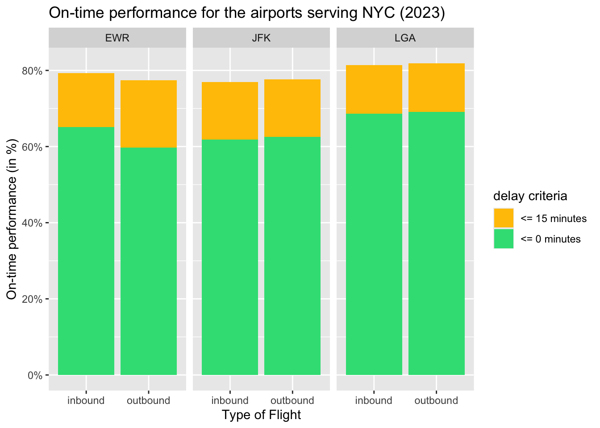
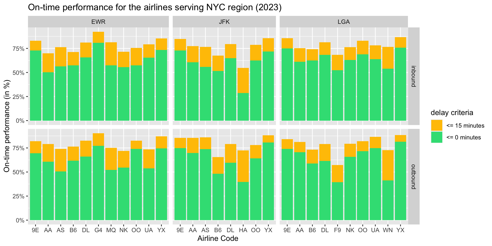
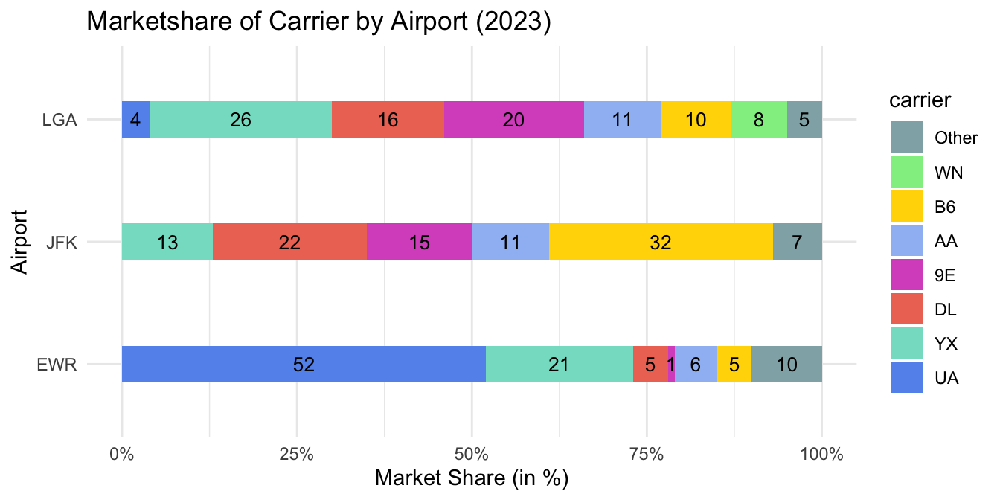

3 Results
3.1 Loading the datasets
Code
flights <- read.csv("data/raw/flights.csv")
airlines <- read.csv("data/raw/airlines.csv")
airports <- read.csv("data/raw/airports.csv")
weather <- read.csv("data/raw/weather.csv")
planes <- read.csv("data/raw/planes.csv")3.2 Loading the required modules
Code
library(dplyr)
Attaching package: 'dplyr'The following objects are masked from 'package:stats':
filter, lagThe following objects are masked from 'package:base':
intersect, setdiff, setequal, unionCode
library(tidyr)
library(ggplot2)
library(scales)
library(forcats)
NYC_AIRPORTS = c("LGA", "JFK", "EWR")3.3 On-time performance
On-time performance is defined as the percentage of flights that departed or arrived on-time. As per the rules of Federal Aviation Administration (FAA), a flight is consider to be delayed only if it arrives or departed after 15 minutes of the scheduled time. In the plots below, the on-time performance is depicted separately for a perfect on-time or early arrival or departure using green color and the on-time performance within a buffer period of 15 minutes using yellow color.
3.3.1 By the airport (RQ1)
Code
inbound <- flights |> filter(!origin %in% NYC_AIRPORTS)
outbound <- flights |> filter(origin %in% NYC_AIRPORTS)
inbound_otp <- inbound |> drop_na() |>
group_by(dest) |>
summarise(total_flights = n(),
strictly_on_time = sum(arr_delay <= 0),
strict_otp = strictly_on_time/total_flights,
on_time = sum(arr_delay <= 15),
otp_increase = on_time/total_flights - strict_otp,
flight_type = "inbound")
outbound_otp <- outbound |> drop_na() |>
group_by(origin) |>
summarise(total_flights = n(),
strictly_on_time = sum(dep_delay <= 0),
strict_otp = strictly_on_time/total_flights,
on_time = sum(dep_delay <= 15),
otp_increase = on_time/total_flights - strict_otp,
flight_type = "outbound")
otp <- rbind(inbound_otp |> rename(airport = dest),
outbound_otp |> rename(airport = origin))Code
otp |> select(airport, otp_increase, strict_otp, flight_type) |>
pivot_longer(!c(airport, flight_type),
names_to = "otp_type",
values_to = "otp") |>
ggplot(aes(x = flight_type, y = otp, fill = otp_type)) +
geom_col() + facet_wrap(~airport) +
scale_fill_manual(values = c("#ffc300", "#32de84"),
name = "delay criteria",
labels = c("<= 15 minutes", "<= 0 minutes")) +
scale_y_continuous(labels = scales::percent) +
labs(
title = "On-time performance for the airports serving NYC (2023)",
x = "Type of Flight",
y = "On-time performance (in %)"
)
The inbound and outbound flights at JFK and LGA had almost the same on-time performance.
However, at EWR, the inbound flights had slightly better on-time performance than outbound flights.
3.3.2 By the airline (RQ2)
Code
inbound <- flights |> filter(!origin %in% NYC_AIRPORTS)
outbound <- flights |> filter(origin %in% NYC_AIRPORTS)
inbound_otp <- inbound |> drop_na() |>
group_by(dest, carrier) |>
summarise(total_flights = n(),
strictly_on_time = sum(arr_delay <= 0),
strict_otp = strictly_on_time/total_flights,
on_time = sum(arr_delay <= 15),
otp_increase = on_time/total_flights - strict_otp,
flight_type = "inbound")`summarise()` has grouped output by 'dest'. You can override using the
`.groups` argument.Code
outbound_otp <- outbound |> drop_na() |>
group_by(origin, carrier) |>
summarise(total_flights = n(),
strictly_on_time = sum(dep_delay <= 0),
strict_otp = strictly_on_time/total_flights,
on_time = sum(dep_delay <= 15),
otp_increase = on_time/total_flights - strict_otp,
flight_type = "outbound")`summarise()` has grouped output by 'origin'. You can override using the
`.groups` argument.Code
otp <- rbind(inbound_otp |> rename(airport = dest),
outbound_otp |> rename(airport = origin))Code
otp |> select(carrier, airport, otp_increase, strict_otp, flight_type) |>
pivot_longer(!c(carrier, airport, flight_type),
names_to = "otp_type", values_to = "otp") |>
ggplot(aes(x = carrier, y = otp, fill = otp_type)) +
geom_col() + facet_grid(flight_type ~ airport,
scales="free",
space = "free") +
scale_fill_manual(values = c("#ffc300", "#32de84"),
name = "delay criteria",
labels = c("<= 15 minutes",
"<= 0 minutes")) +
scale_y_continuous(labels = scales::percent) +
labs(
title = "On-time performance for the airlines serving NYC region (2023)",
x = "Airline Code",
y = "On-time performance (in %)"
)
Allegiant Air (G4) had the best on-time performance at EWR (also among all the three airports). However, it had the least market share implying that it operated fewer domestic flights but had a very good on-time performance for them.
United Airlines (UA) and Republic Airlines (YX) have a large market share at EWR and also have a commendable on-time performance for that operational scale.
JetBlue (B6) has the highest market share at JFK but has a relatively weaker on-time performance especially for outbound flights.
Hawaiian Airlines (HA) operates very few domestic flights to JFK but had a very weak on-time performance. Moreover, it turns out that many of their flights arrived within the 15 minute buffer period.
Frontier Airlines (F9) had the worst on-time performance for outbound flights among all airlines.
Code
airlines <- c("DL", "AA", "UA", "WN", "B6", "YX", "9E")
inbound$carrier <- ifelse(inbound$carrier %in% airlines,
inbound$carrier, "Other")
outbound$carrier <- ifelse(outbound$carrier %in% airlines,
outbound$carrier, "Other")
inbound_mkt <- inbound |> select(carrier, dest) |>
group_by(dest, carrier) |>
summarise(num_flights = n())`summarise()` has grouped output by 'dest'. You can override using the
`.groups` argument.Code
outbound_mkt <- outbound |> select(carrier, origin) |>
group_by(origin, carrier) |>
summarise(num_flights = n())`summarise()` has grouped output by 'origin'. You can override using the
`.groups` argument.Code
airport_mkt_share <-
inner_join(rename(inbound_mkt, airport = dest),
rename(outbound_mkt, airport = origin),
by = c("carrier", "airport")) |>
mutate(total_flights = num_flights.x + num_flights.y,
mkt_share = total_flights/sum(total_flights)*100.0,
mkt_share = round(mkt_share))Code
fill_color = c("DL" = "#EE7663", "AA" = "#A0BEF5", "WN" = "lightgreen",
"UA" = "cornflowerblue", "B6" = "gold", "Other" = "#91AFB3",
"YX" = "#85decb", "9E" = "#d959c6")
airport_mkt_share |> ggplot(aes(x = airport,
y = mkt_share/100, fill = fct_reorder(carrier,
mkt_share))) +
geom_col(position = "stack", width = 0.3) +
geom_text(aes(label = mkt_share),
position = position_stack(vjust = .5),
size = 3.5) +
scale_fill_manual(values = fill_color,
name = "carrier") +
scale_y_continuous(labels = scales::percent) +
labs(title = "Marketshare of Carrier by Airport (2023)",
x = "Airport",
y = "Market Share (in %)") +
coord_flip() +
theme_minimal()
The domestic market share at LGA was dominated by Delta Airlines (DL) and American Airlines (AA). This is because Endeavor Airlines (9E) is a subsidiary of Delta Airlines and Republic Airlines (YX) operates under contract for Delta, American, and United.
The domestic market share at JFK was dominated by JetBlue Airlines (B6) and Delta Airlines (DL).
United Airlines (UA) dominated more than half of the domestic market share at EWR.